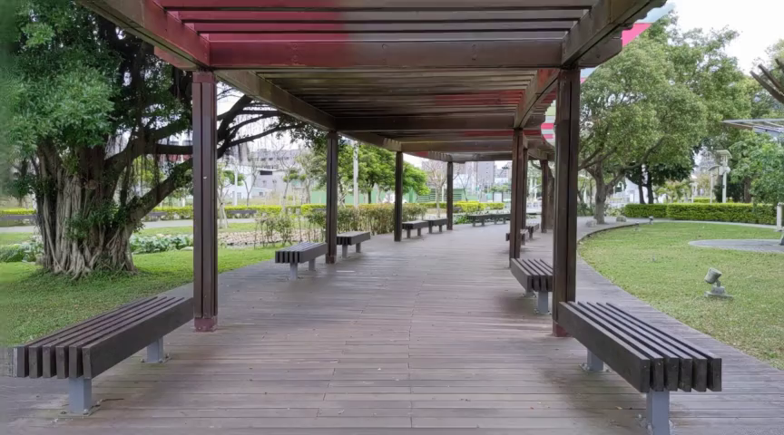
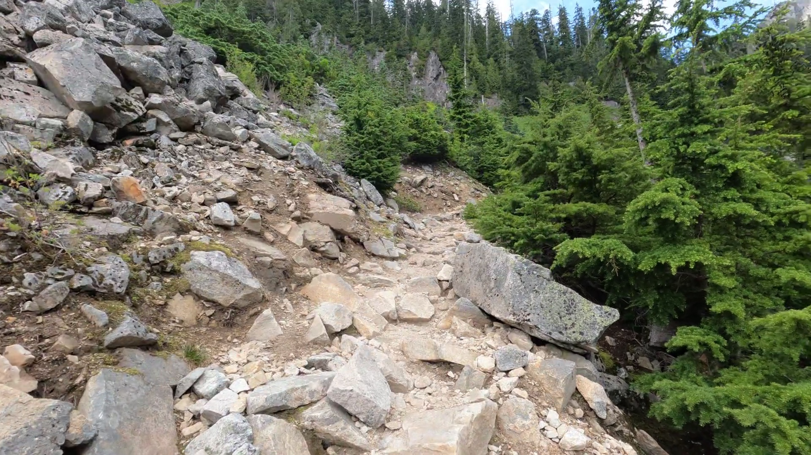
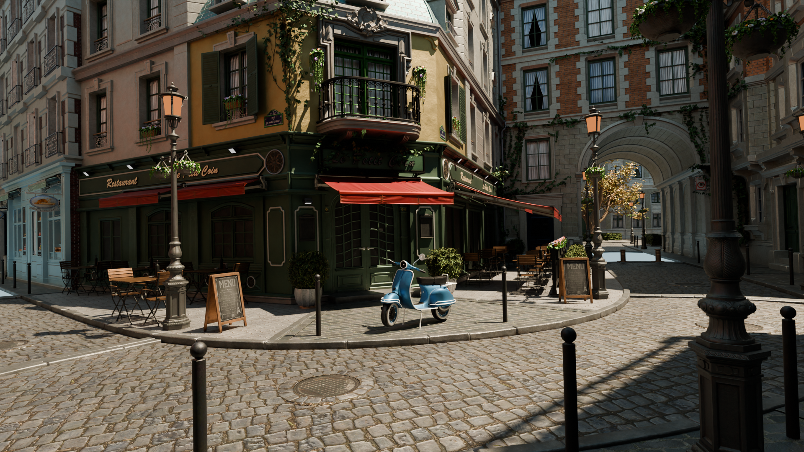
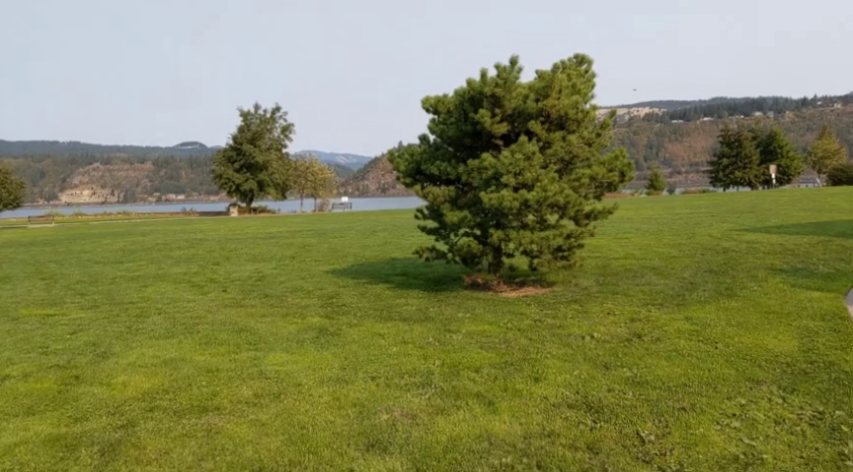
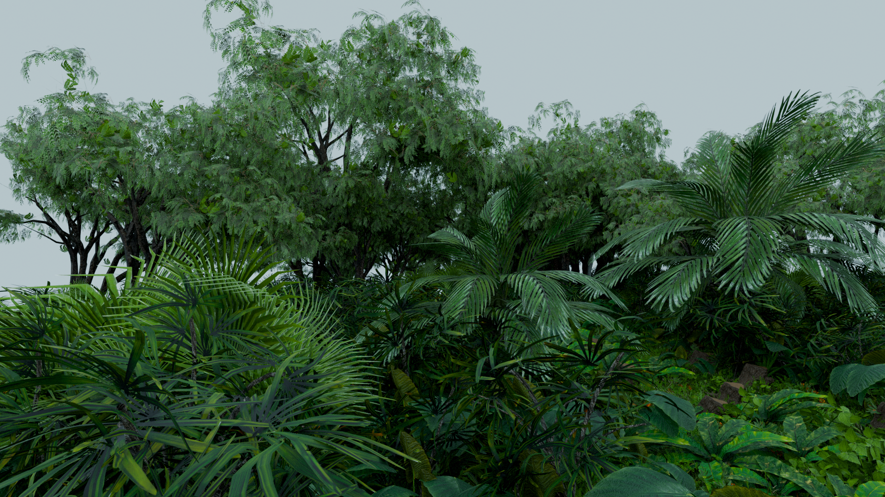
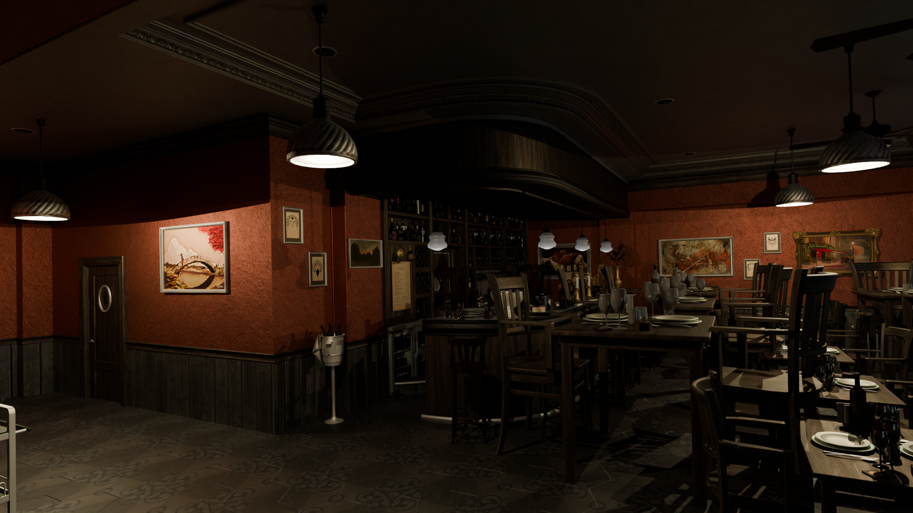
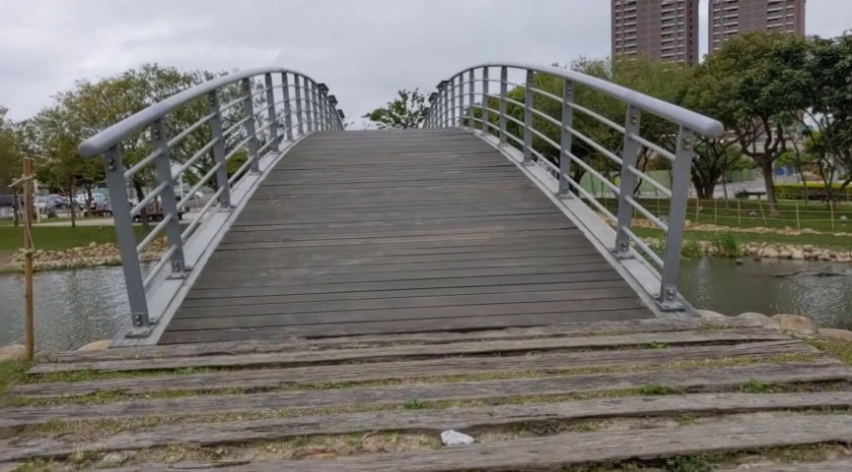

Existing video stabilization methods based on 2D warping or local 3D cues often struggle to preserve full-frame content and geometric consistency, particularly under large camera motions or complex scene geometry. We present StabiGS, a novel approach that formulates video stabilization as a rendering-aware view synthesis problem. Our method reconstructs a global 3D scene representation and jointly optimizes the camera smoothness and the rendering quality to compute the stabilized trajectory. Thus, unlike filtering-based approaches, StabiGS produces stable videos while maintaining geometric consistency. To enable a comprehensive evaluation, we present a synthetic benchmark with controllable camera shakiness and accurate ground-truth poses, enabling a reliable assessment of stabilization and rendering quality. Extensive experiments and a user study demonstrate that StabiGS achieves state-of-the-art performance in stabilization and rendering quality.
Shaky
StabiGS






Here, we compare StabiGS with state-of-art video stabilization methods. Our method enables cinematic full-frame stabilization while preserving geometric consistency, even under intense camera motion and complex scene geometry.

- The real-world videos are based on the following works:
- The synthetic videos are created using Blender and the assets are from the following works:
@InProceedings{Ben_Mabrouk_2026_CVPR,
author = {Ben Mabrouk, Souheib and Deschaud, Jean-Emmanuel and Coupet\'e, Eva and Derbanne, Thomas and Rahmouni, Nicolas},
title = {StabiGS: Video Stabilization through Rendering-Aware Trajectory Optimization in 3DGS-Reconstructed Scenes},
booktitle = {Proceedings of the IEEE/CVF Conference on Computer Vision and Pattern Recognition (CVPR) Findings},
month = {June},
year = {2026},
pages = {8481-8491}
}